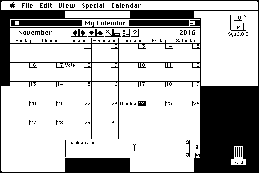

Download
network_calendar_1.4.8.zip (168K) Network Calender 1.4.8 repackaged into a zipped hfs disk image and checksum file. The disk image can be mounted with Mini vMac.
network_calendar_1.4.8.hqx (262K) Network Calender 1.4.8 in the original format.
copyright: T&T Software
mod date: May 4, 1996
license: shareware and free for non-commercial use
official url :
T&T Software - Network Calendar
Single user calender is free, extension to share calenders on a network was shareware, but no longer for sale. (But Mini vMac doesn't support networking, yet.) By Tad Woods. For “System versions 6.x and 7.x”.

If you find these downloads useful, please consider helping the Gryphel Project, which hosts them.
Here are the md5 checksums for the downloads, signed with Gryphel Key 5:
--------- GRY SIGNED TEXT --------- 1fa18dae9e70094ab8e150f4527a6b29 network_calendar_1.4.8.zip b61e0bb5aec447fde91d4e87d095f034 network_calendar_1.4.8.hqx ------- BEGIN GRY SIGNATURE ------- Gry/4Xa8CFcUzxdN/Fcv8dfBVcU2jdR9/UDN5f/hd+8jPZ1lXUPAnTvf5y62ryxk QcT8Pa3A3/9iPam8TZCH3MmyCkslPjqCtzzLlrqssgj/ocv16Ev28GhETVe0DWHJ uF3vPVRpyW8OweSTP+hebgzqp889H/okjQsnlqt9mUYsfV0jDEncQqKlRvaPq2kY -------- END GRY SIGNATURE --------